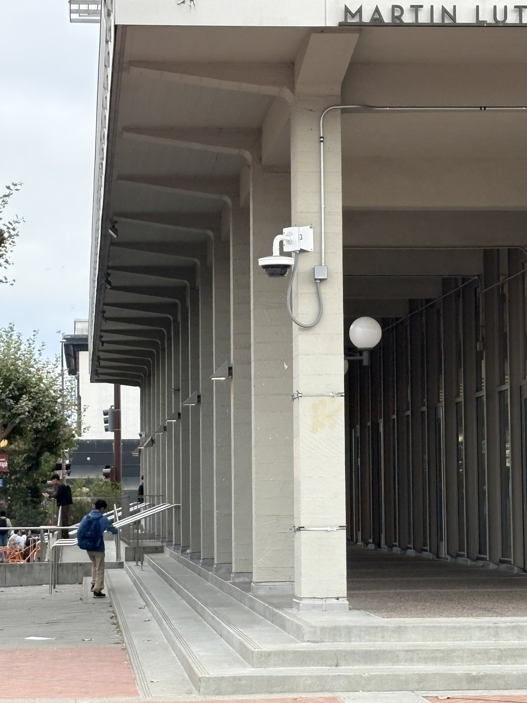
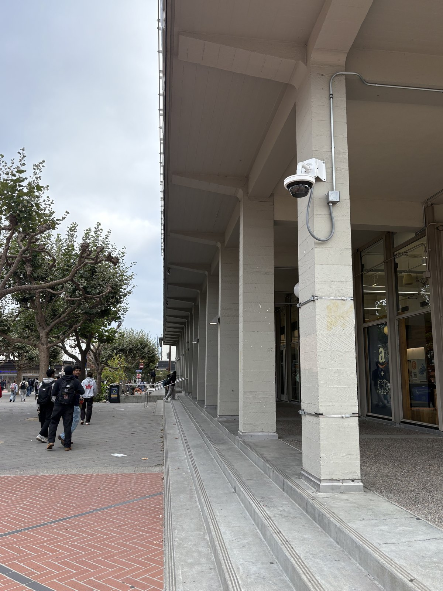
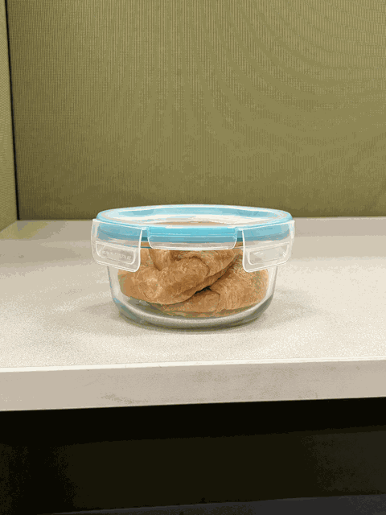

Three small experiments in what happens when you change where you stand. Each pair below keeps the subject roughly the same size in frame, so the only real variable is the distance between the camera and the subject — and that turns out to change everything.
Part 1 · Selfie: The Wrong Way vs. The Right Way
Why
The lens is not what flattered or wrecked the face — the distance did. Shooting from about a foot away, my nose is meaningfully closer to the center of projection than my ears are, so it projects much larger. Stepping back to six feet shrinks that ratio toward 1, and the projection approaches an orthographic one where near and far features scale almost equally. Zooming in only restores the framing; it does not touch perspective at all.
Part 2 · Architectural Perspective Compression


Why
This is the selfie effect run in reverse. From far away, the difference in distance between the nearest column and the farthest one is small compared to how far away all of them are, so they project at nearly the same scale and depth collapses. Up close, that same difference is a large fraction of the total distance, so the near columns tower over the far ones and the recession becomes dramatic.
Part 3 · The Dolly Zoom

Why
Each frame walks the camera backward while zooming in by just enough to hold the subject at a constant size. Because the subject is pinned, the only thing free to change is everything behind it: as the camera retreats, the background's relative depth compresses and it appears to swell forward. The subject sits still while the world reorganizes around it — which is exactly the unsettling quality Hitchcock was after in Vertigo.